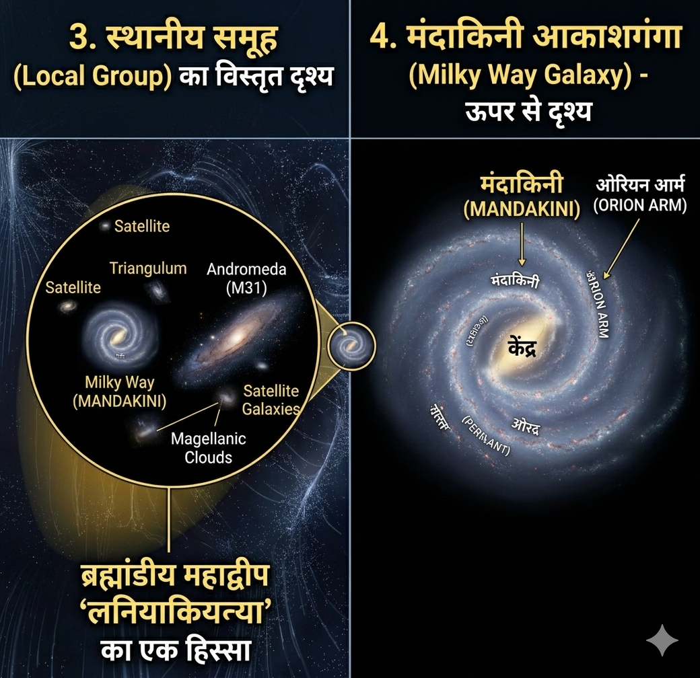
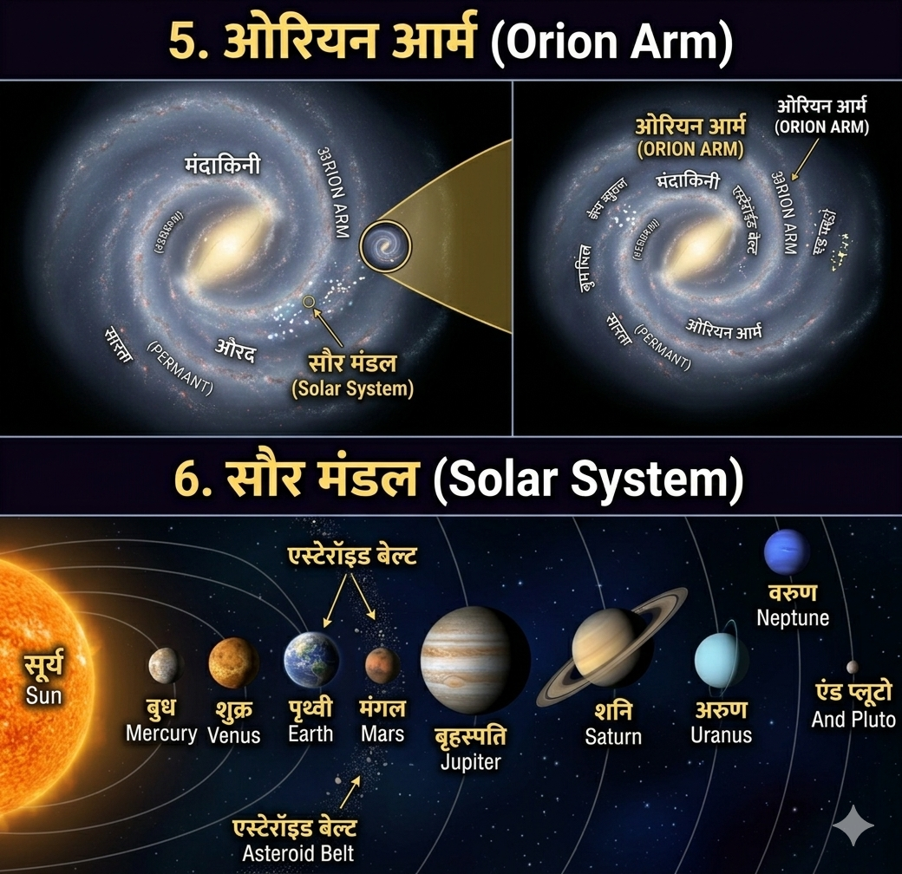

Geographical Thought
हमारा ब्रह्मांडीय क्रम (The Hierarchy)
ब्रह्मांड में हमारी स्थिति को समझने के लिए हमें सबसे विशाल 'सुपरक्लस्टर' से शुरू करके अपनी 'पृथ्वी' तक आना होगा। यह हमारा सही भौगोलिक पता है:
1. लानियाकिया सुपरक्लस्टर (Laniakea Supercluster):
यह हमारा "ब्रह्मांडीय महाद्वीप" है, जिसमें लगभग 1 लाख आकाशगंगाएँ शामिल हैं।
यह हमारा "ब्रह्मांडीय महाद्वीप" है, जिसमें लगभग 1 लाख आकाशगंगाएँ शामिल हैं।
चित्र: लनियाकिया सुपरक्लस्टर का विशाल दृश्य
↓ 2. कन्या सुपरक्लस्टर (Virgo Supercluster):
लानियाकिया के अंदर वह क्षेत्र जहाँ आकाशगंगाओं का घनत्व अधिक है।
लानियाकिया के अंदर वह क्षेत्र जहाँ आकाशगंगाओं का घनत्व अधिक है।
↓ 3. स्थानीय समूह (Local Group):
लगभग 54 आकाशगंगाओं का समूह, जिसमें हमारी 'मंदाकिनी' एक प्रमुख सदस्य है।
लगभग 54 आकाशगंगाओं का समूह, जिसमें हमारी 'मंदाकिनी' एक प्रमुख सदस्य है।
↓ 4. मंदाकिनी आकाशगंगा (Milky Way Galaxy):
हमारी सर्पिलाकार आकाशगंगा (Spiral Galaxy)।
हमारी सर्पिलाकार आकाशगंगा (Spiral Galaxy)।

ब्रह्मांडीय क्रम: स्थानीय समूह (Local Group) और हमारी मंदाकिनी आकाशगंगा का दृश्य
↓ 5. ओरियन आर्म (Orion Arm):
आकाशगंगा की वह विशेष भुजा या "गली" जहाँ हमारा सौर मंडल स्थित है।
आकाशगंगा की वह विशेष भुजा या "गली" जहाँ हमारा सौर मंडल स्थित है।
↓ 6. सौर मंडल (Solar System):
सूर्य के गुरुत्वाकर्षण में बंधे हुए 8 ग्रहों का परिवार।
सूर्य के गुरुत्वाकर्षण में बंधे हुए 8 ग्रहों का परिवार।

ब्रह्मांडीय क्रम: ओरियन आर्म में हमारी स्थिति और संपूर्ण सौर मंडल का दृश्य
*नोट: प्लूटो अब एक मुख्य ग्रह नहीं है, इसे 2006 से 'बौना ग्रह' (Dwarf Planet) माना जाता है।
📍 7. पृथ्वी (Our Home: Earth)महत्वपूर्ण भौगोलिक तथ्य:
एक भूगोलवेत्ता के लिए यह जानना ज़रूरी है कि Laniakea का केंद्र 'ग्रेट अट्रैक्टर' (Great Attractor) है, जो हमारी गैलेक्सी को अपनी ओर खींच रहा है। हम इस विशाल ब्रह्मांडीय जाल (Cosmic Web) का एक अत्यंत छोटा लेकिन महत्वपूर्ण हिस्सा हैं।
← होम पेज पर वापस जाएं